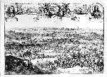

Victorien der Nederl. Geoct. O. Compagni[e] op het Koninkryck van Macasser door den Ed. Heer G. Speelman. [Door Romeyn de Hooghe.] Ets. 395 x 550 mm. [Amsterdam, circa 1669.] -- (COLLBN Port. 59 N 55)
Ook al ligt er nog geen zeventig jaar tussen de prenten die het optreden van Prins Maurits in beeld brengen en de hier getoonde kijk op de oorlogshandelingen in het verre ‘Macasser’, het is alsof we een andere wereld binnengaan. Er wordt, midden in beeld, nog wel van uitgegaan dat de kijker pas begrijpt dat het om echte oorlog gaat als hij een gestileerd ‘woud’ van lansen ontwaart, maar dat is bijzaak geworden naast de buitengewoon realistisch weergegeven gevechten en brandschattingen, die zich vanaf het voorplan bijna tot aan de verre einder afspelen, waarbij diverse gebeurtenissen uit dezelfde campagne in één landschap zijn verenigd.
Natuurlijk is hier ook veel gestileerd en zijn we nog altijd niet aangeland bij een echt ooggetuigeverslag zoals alleen foto en film dat kunnen geven, maar Romeyn de Hooghes inlevingsvermogen is duidelijk van ander gehalte dan dat van zijn voorgangers -- en we kunnen er zeker van zijn dat dat ook van hem werd verwacht.
Hij bedient zich daarbij overigens van een beproefd stijlmiddel: de suggestie die de voorstelling bevat, dat men vanaf een heuvel de vlakte kan overzien. Dit stijlmiddel, in de zeventiende eeuw alom in gebruik, komt op de hier gepresenteerde oorlogsprenten niet zo duidelijk aan de orde, maar de manier waarop De Hooghe het hier gebruikt is duidelijk geacheveerd: eerdere gravures wekken veelal de indruk dat voorgrondpartij en panoramisch uitzicht niet geheel -- en soms in het geheel niet -- in elkaars verlengde liggen, terwijl daarentegen hier, in deze gravure, een grote mate van ‘net-echtheid’ is bereikt. Het mag trouwens opmerkelijk heten dat de Verenigde Oost-Indische Compagnie haar oorlogspraktijken (die men nodig had om voet aan land te krijgen in de onderscheiden koloniale gebieden) niet verborgen hield, maar ze, zoals hier in deze grandioze prent van niemand minder dan Romeyn de Hooghe, men zou haast zeggen onverbloemd openbaar maakte.
Literatuur
- F. Muller, De Nederlandsche geschiedenis in platen. Beredeneerde beschrijving van Nederlandsche historieplaten, zinneprenten en historische kaarten. Amsterdam 1863-1882. 4 dln, I, nr. 2294.
- G. van Rijn, Atlas Van Stolk. Katalogus der historie-, spot- en zinneprenten betrekkelijk de geschiedenis van Nederland, verzameld door A. van Stolk Cz. Amsterdam 1895-1933. 10 dln, III. nr. 2391.
- W.H. Wilson, The art of Romeyn de Hooghe: an atlas of European late Baroque culture. Cambridge (Mass.) 1974, p. 131-133.
| vorige pagina | top pagina |